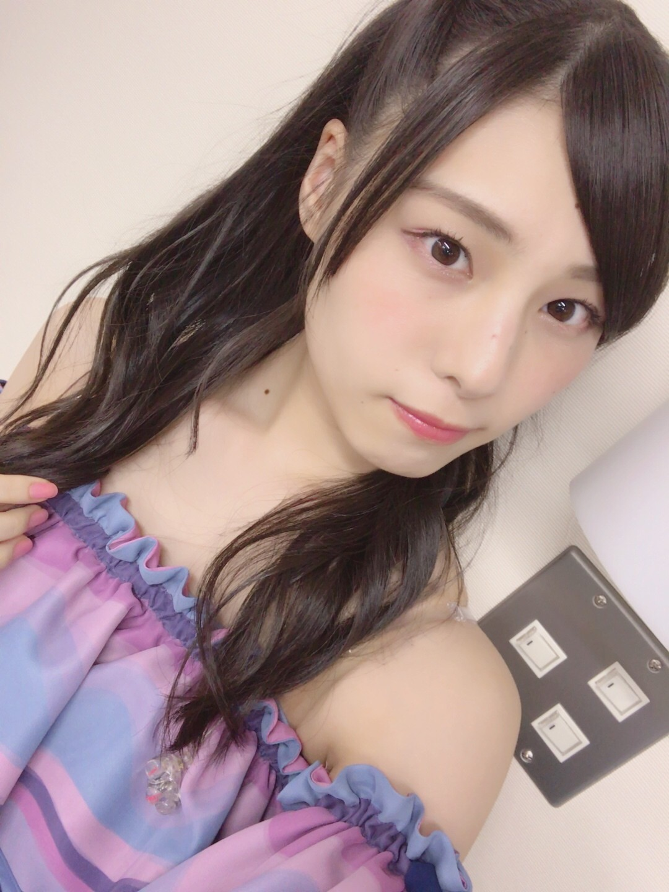
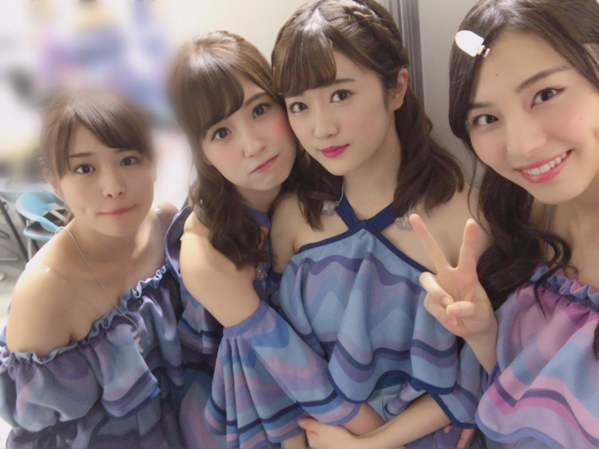
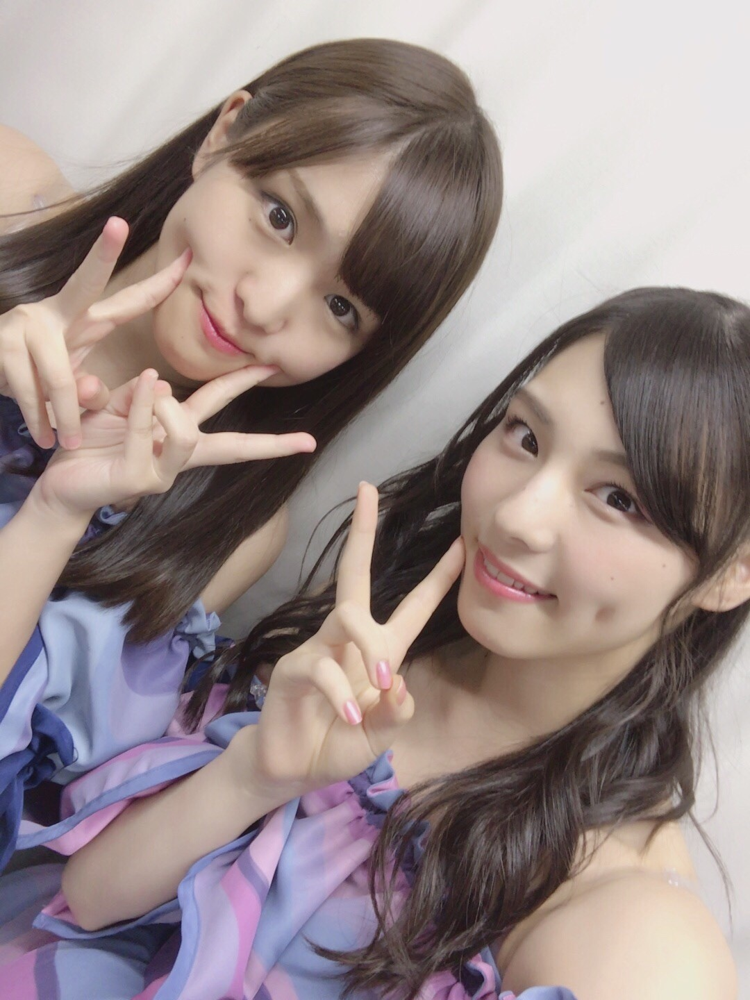
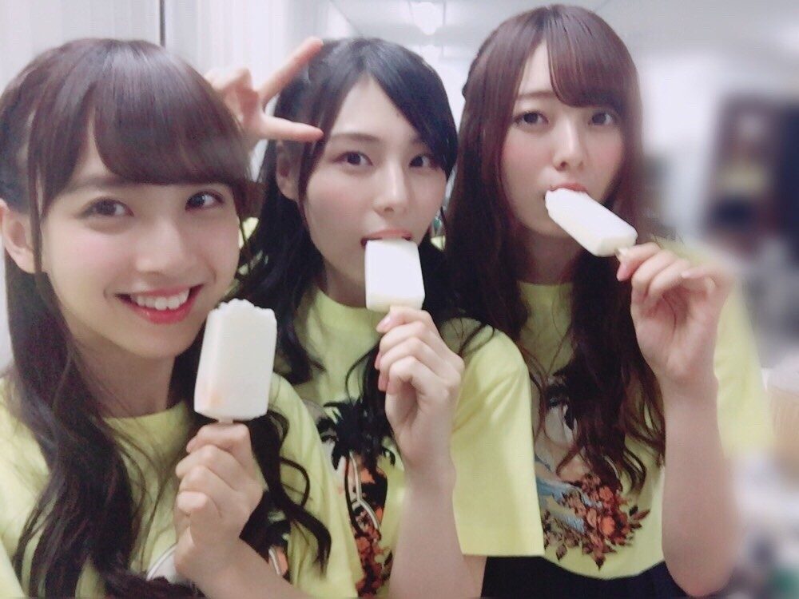
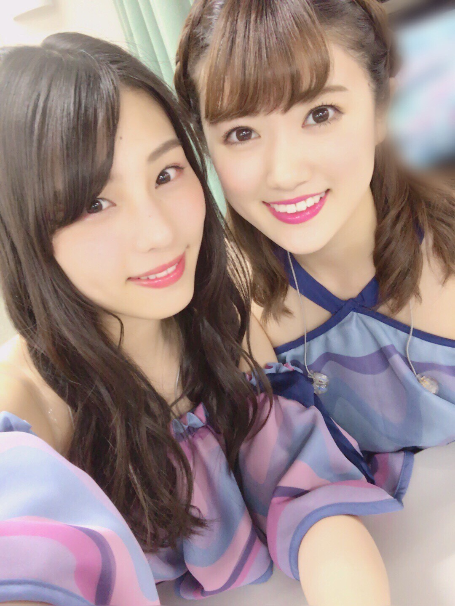

| 2017/08 24 Thu | だれも気付かない_(．．*)vol.203 |
みなさんこんばんはー！
19歳 相楽伊織です！

逃げ水～
全国ツアー
名古屋まで終わりました！！！
次はアンダーライブ九州ツアーを
挟んでからの新潟ですが
10月まで空いてしまうので
真夏の全国ツアーは終わった気分です(^^;
でもラストは
東京ドームですもんね！！！
まだまだ終わらない～(^-^)/

ライブに来てくださった皆さんは
いかがでしたか？
まだライブの内容は言えませんが、
楽しんでもらえてるのかな？

かりんちゃんのストレート好き♡
仙台、大阪、名古屋と
今年も各地を回らせてもらいました。
毎回食べ物のお話になってしまいますが
普段は食べない各地の名産品を食べられるので
とても楽しいです♪
大阪では珍しくご飯会に行きました！
みんなと話して笑ってる時間が好きです(^^)
ライブ終わりに
メンバーと美味しいもの食べて
とても幸せな時間(^^)
名古屋は純奈が出られなかったけど
日奈子が戻ってきてくれて良かったよ～
みんな早く良くなってね
3期生もだいぶ緊張がとけて
距離が縮まってきてる気がします♪
アイス〜
ミルク味しか食べてない
うめとかえでちゃんはフルーツ

素直で純粋な子が好きです♡
たまちゃんとも
カフェに行く約束しました～(^^)
明後日はアルバム特典で
みなさんにお会いしますね(><)
久しぶりで緊張します！
そしてその次の日は握手会だし
ここからは皆さんとのイベントが沢山！

同い年～
ひなちまとも色々約束してるから
早く行きたいなーヽ(*^^*)ノ
 BRODY 発売中
BRODY 発売中
2期生特集を組んで頂きました！
全員出ています(^^)
取材の方もボリューム満点です！
是非みてねヽ(*^^*)ノ
NYLON JAPAN 8/29 発売
玲香さん、万理華さんと出させて頂きます！
玲香さん、レギュラーモデル
おめでとうございます(^^)
私もずっとずっと
出たくてたまらなかった雑誌だったので
撮影の時に
NYLONさんの世界観にどっぷりつかれて
本当に夢が叶った瞬間でした。
とても有難いお仕事でした。
撮影は難しかったけど
それ以上に楽しかったです(^^)
是非見て下さい。
i o r i .

コメント(677)
2017/08/24 21:25